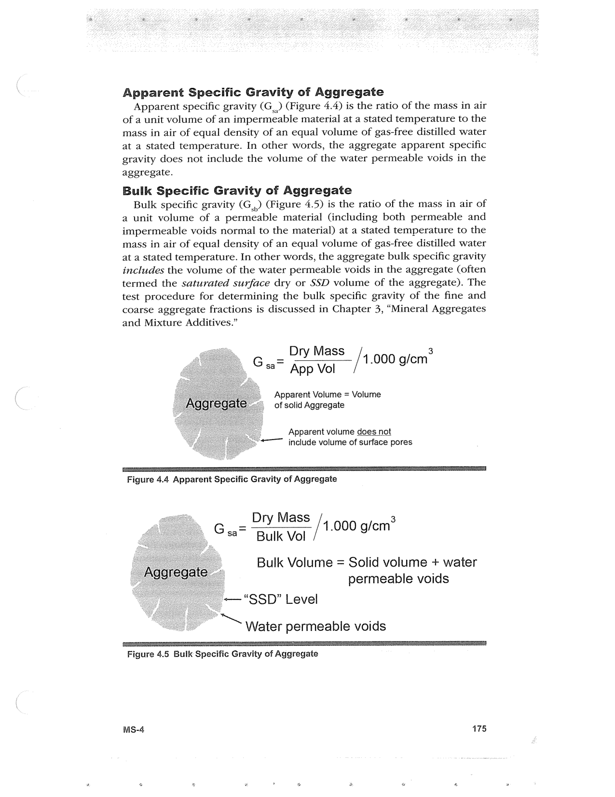

PDF page 209 · book page sequence 175


Searchable transcription
Unproofread OCR · 259 detected words; mean OCR confidence 94.17. Check technical values, symbols and table columns against the scan.
Apparent Specific Gravity of Aggregate
Apparent specific gravity (G,,) (Figure 4.4) is the ratio of the mass in air of a unit volume of an impermeable material at a stated temperature to the mass in air of equal density of an equal volume of gas-free distilled water at a stated temperature. In other words, the aggregate apparent specific gravity does not include the volume of the water permeable voids in the aggregate.
Bulk Specific Gravity of Aggregate
Bulk specific gravity (G,) (Figure 4.5) is the ratio of the mass in air of a unit volume of a permeable material (including both permeable and impermeable voids normal to the material) at a stated temperature to the mass in air of equal density of an equal volume of gas-free distilled water at a stated temperature. In other words, the aggregate bulk specific gravity includes the volume of the water permeable voids in the aggregate (often termed the saturated surface dry or SSD volume of the aggregate). The test procedure for determining the bulk specific gravity of the fine and coarse aggregate fractions is discussed in Chapter 3, “Mineral Aggregates and Mixture Additives.”
_ Dry Mass
3 = 1.000 Gea App Vol / g/cm
Apparent Volume = Volume of solid Aggregate
Apparent volume does not - include volume of surface pores
Figure 4.4 Apparent Specific Gravity of Aggregate
_ Dry Mass G sa “Bulk Vol
/ 4.000 g/em®
Bulk Volume = Solid volume + water permeable voids
~— “SSD” Level
Water permeable voids
Figure 4.5 Bulk Specific Gravity of Aggregate
MS-4 175